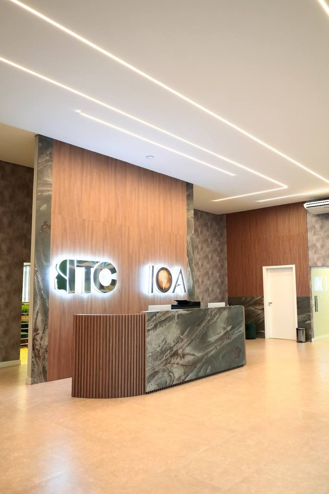
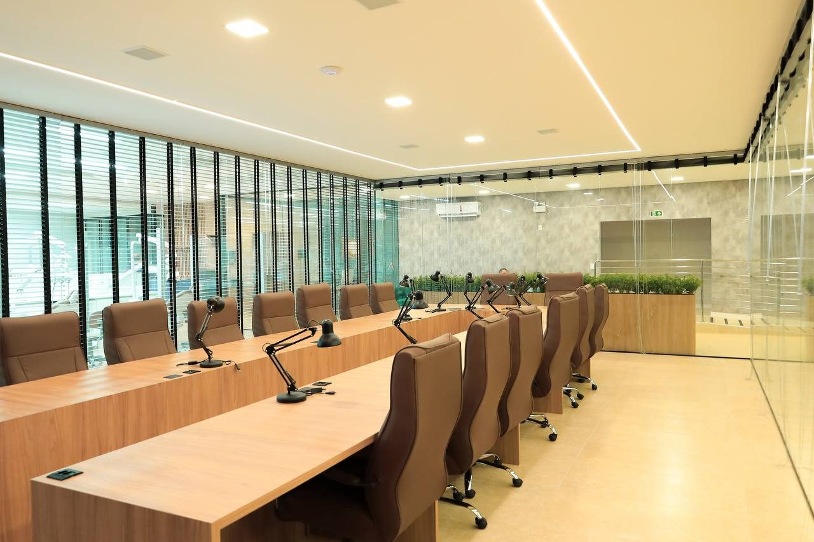

IOA
Instituto Orofacial das Américas: rede de educação em saúde orofacial do Grupo Kefraya, a maior Rede Premium em Educação Orofacial.
Instituto Orofacial das Américas: rede de educação em saúde orofacial do Grupo Kefraya, a maior Rede Premium em Educação Orofacial.
Instituto de Treinamento em Cadáveres: treinamento avançado com cadáveres frescos para profissionais da saúde.
Parceira da iniciativa em São Luís.
Números informados pela instituição; referem-se à rede IOA, não à unidade de São Luís.
Texto completo de missão e visão a ser fornecido pela instituição.


Prof. Dr. José Márcio Soares Leite, assessor de Assuntos Especiais do Grupo Educacional Ceuma.
Medicina (UFMA, 1973), mestrado (UFMA, 2001) e doutorado (UnB, 2010) em Ciências da Saúde. Ex-Secretário Municipal de Saúde de São Luís e ex-Secretário de Estado da Saúde do Maranhão.